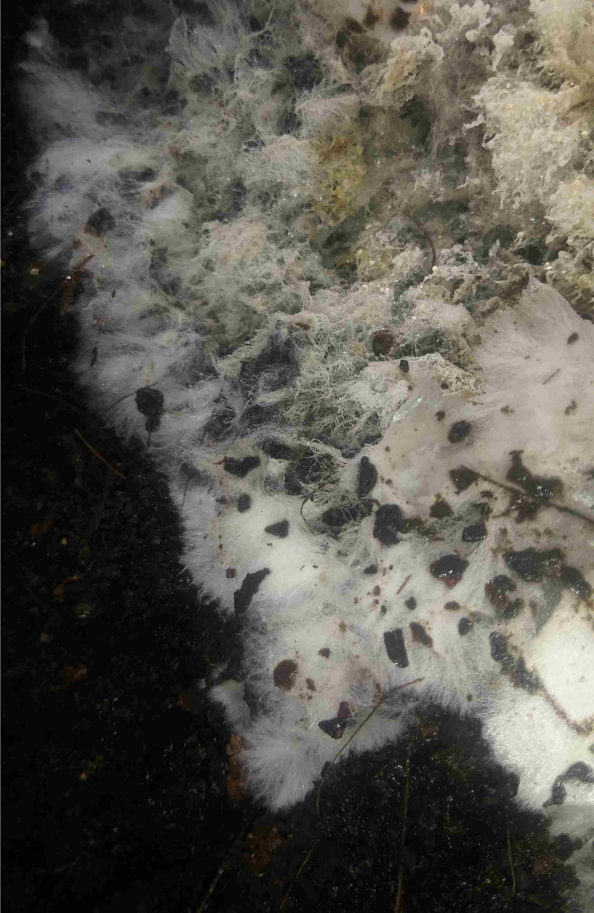
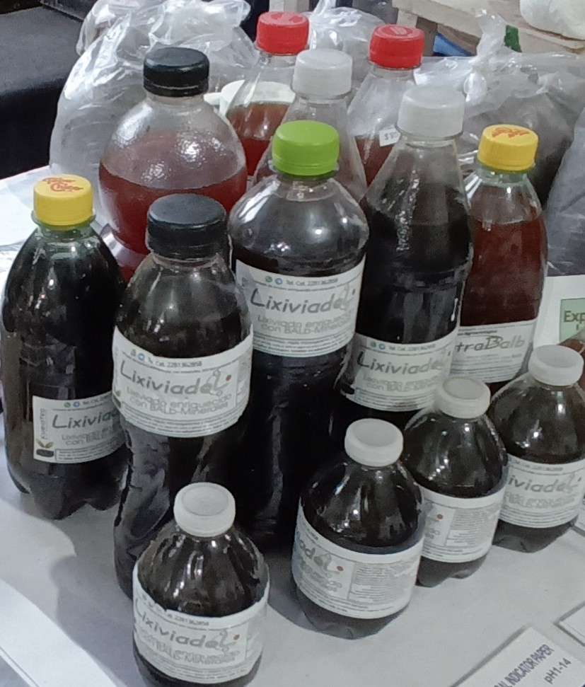

Venta de Lombriz roja californiana, la más eficiente para el proceso de compostaje,
transforma del 60% al 80% de tus residuos en tierra rica en nutrientes. Te ayudamos a tener éxito en la transformación de los residuos orgánicos y contribuir a disminuir
la contaminación ambiental.

Microorganismos benéficos
Te brindamos asesoramiento para que implementes el uso de microorganismos benéficos.
Con el uso de las biotecnologías podemos acelerar el proceso de lombricompostaje y compostaje,
disminuir malos olores y mejorar el producto final con microorganismos benéficos para las plantas.
Descubre los beneficios de los microorganismos en tu plantas y cultivos, mejorando la salud del suelo y las plantas, aumentando la productividad de tus cultivos.
Conoce más de mis servicios

Distintos productos para todo tipo de plantas y cultivos
Nutrientes a base de microorganismos benéficos, microorganismos benéficos, insecticidas y plaguicidas que no dañan tu salud ni contaminan el ambiente.